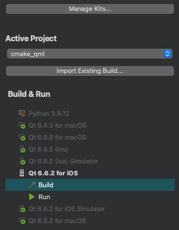
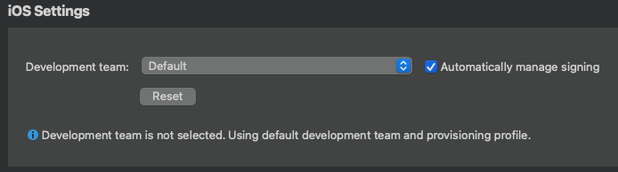
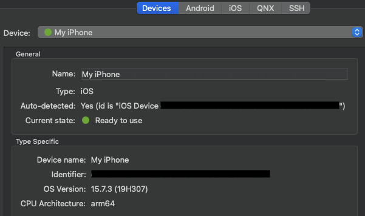
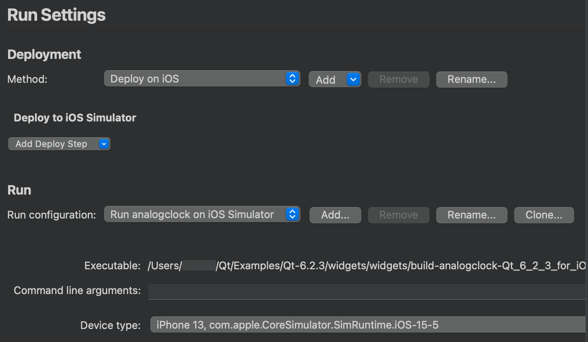
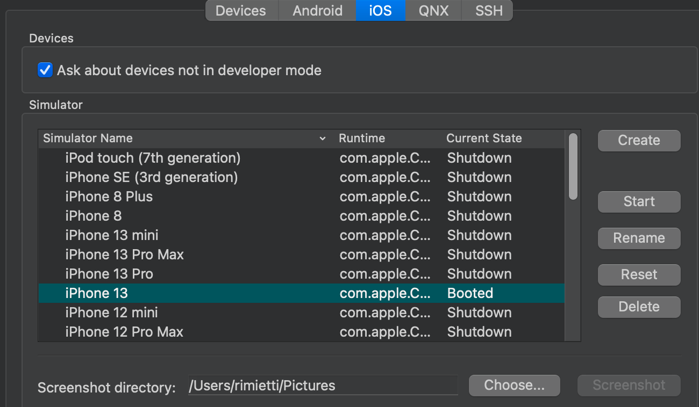

Connecting iOS Devices
You can connect iOS devices to your local machine with a USB cable to run applications built for them from Qt Creator.
To be able to use Qt Creator on macOS, you must install Xcode, and therefore, you already have the tool chain for building applications for iOS. Qt Creator automatically detects the tool chain and creates the necessary kits to build applications for and run them on configured iOS devices.
You only need Qt libraries that are built for iOS. You can install them as part of Qt 5.2, or later.
iOS 17 Devices
Qt Creator detects iOS devices, and you can deploy and run applications on them.
For iOS devices with iOS 16 or earlier, Qt Creator also supports accessing the application output, debugging, and profiling. However, these features are not supported for physical devices with iOS 17 or later because of limitations of the Apple tool for accessing these devices.
Configuring Devices
The connections between Qt Creator and an iOS device are protected by using a certificate that you receive from Apple when you enroll in the Apple Developer Program. The certificate is copied to the device when you configure the device.
The first time you connect the device to your local machine, you are asked to enable developer mode on the device. The next time you connect the device, Qt Creator detects it automatically. To disable automatic connections to a device that you do not use for development, select Preferences > iOS, and deselect the Ask about devices not in developer mode check box.
Note: The process of configuring devices and the UI varies slightly depending on the Xcode version that you use. We recommend that you use the latest available Xcode version.
To configure connections between Qt Creator and an iOS device:
- Make sure that you have Xcode and Qt for iOS installed.
- Connect the device to your local machine with a USB cable.
- Start Xcode to configure the device.
For example, in Xcode version 15, select Window > Devices and Simulators > Devices > + to add the connected device.
- To specify build settings:
- Open a project for an application you want to develop for the device.
- Select Projects > Build & Run to select the kit for building applications for and running them on iOS.

- In iOS Settings, select the development team to use for signing and provisioning applications. You must configure development teams and provisioning profiles in Xcode using an Apple developer account.

- Select the Automatically manage signing check box to automatically select the provisioning profile and signing certificate on your local machine that matches the entitlements and the bundle identifier of the iOS device.
- Select Run to specify run settings.
Usually, you can use the default settings.
When you run the project, Qt Creator uses Xcode to deploy the application to the device.
Your signing certificate is used to sign application packages for deployment to the device.
Note: If you cannot deploy applications because a provisioning profile is missing, check that provisioning profiles are listed in Xcode by selecting Xcode > Preferences > Accounts. For more information about how to acquire and install a provisioning profile, see Apple documentation.
Viewing Device Connection Status
When you connect an iOS device to your local machine with USB, Qt Creator automatically detects the device if you have configured it by using Xcode. To view information about the connected device, select Preferences > Devices.

If the current device state is Connected, (the traffic light icon is orange), you need to configure the device using Xcode.
Specifying Supported iOS Versions
You can build applications for the latest iOS version and deploy them to previous versions. For the most part, this works automatically. However, you must take care when you manually set your own target version. If you set it to a value higher than what Qt requires and supply your own Info.plist file, you must add an LSMinimumSystemVersion entry to the Info.plist that matches the value of CMAKE_OSX_DEPLOYMENT_TARGET (when using CMake), QMAKE_IOS_DEPLOYMENT_TARGET (when using qmake), or cpp.minimumIosVersion (when using Qbs) because iOS (and the App Store) will use the LSMinimumSystemVersion value as the authoritative one.
If you specify a deployment target value lower than what Qt requires, your application will almost certainly crash somewhere in the Qt libraries when run on an older version than Qt supports. Therefore, make sure that the actual build system code reflects the minimum iOS version that is actually required.
For more information, see Expressing Supported iOS Versions.
Testing on Simulator
If you do not have an iOS device or you do not want to create an account, you can test applications on Simulator, which is installed as part of Xcode. Each Xcode version simulates a predefined set of hardware devices and software versions.
You can change the simulated hardware and software version in the run settings for the project. Select Projects > Run, and then select the device to simulate in the Device type field.

The simulator is started automatically when you run the application. To start the simulator manually, select Preferences > Devices > iOS > Start.
To take screenshots of the simulator, select Preferences > Devices > iOS > Screenshot. The screenshots are stored in the directory specified in the Screenshot directory field.
Managing Simulators
The available simulators are listed in Preferences > Devices > iOS.

To create a new simulator instance:
- Select Create.
- In the Device type field, select the device type from a list of devices supported by the Xcode version set as current on your local machine.
- In the OS version field, select an OS version from a list of OS versions supported by the selected device and the current Xcode version.
To rename the selected simulator, select Rename.
To reset the contents and settings of the selected simulators, select Reset.
To delete the selected simulator, select Delete.